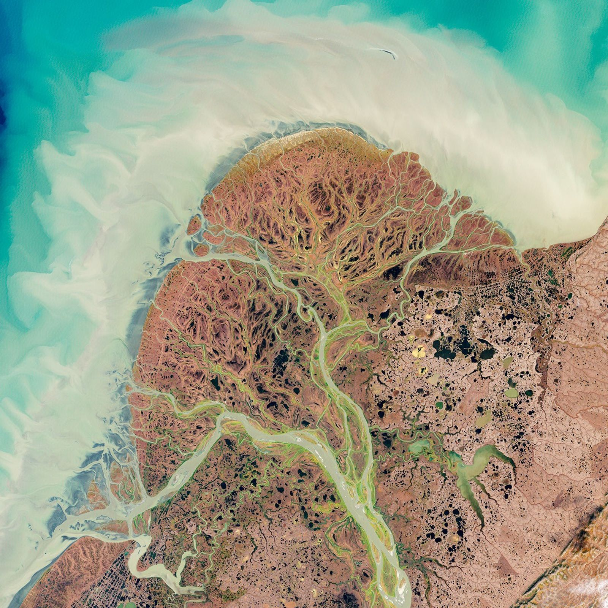
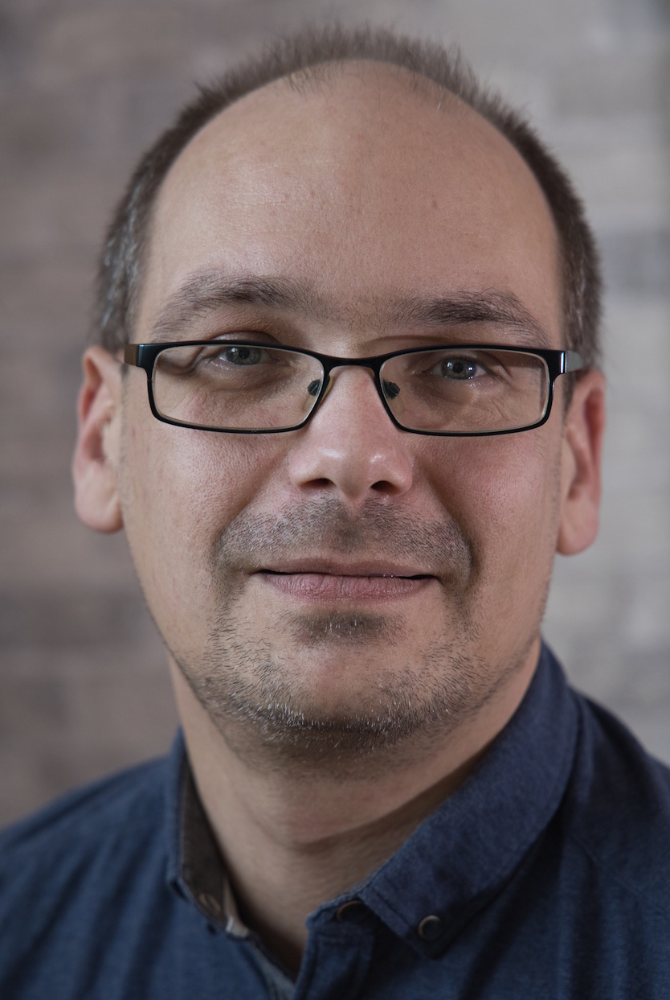

Software engineering
Custom applications, data readers and processing tools. Built around your scientific requirements and the people who will use them.
Marco Peters Hamburg, Germany
Freelance Senior Software Developer.
Earth Observation expert.
I turn complex Earth Observation tasks into software people like to use easily. With more than 20 years in Earth Observation, I connect scientific ideas with thoughtful engineering. Explore my journey

A different perspectiveWhat I bring
From a new data format to an entire application: I help turn Earth Observation requirements into useful, maintainable software.
Custom applications, data readers and processing tools. Built around your scientific requirements and the people who will use them.
Deep experience with ESA’s SNAP ecosystem, from data access and algorithm integration to processing workflows and visualisation.
Technical leadership, hands-on consulting and SNAP training. A partner who can discuss the bigger picture and work through the details.
The journey so far
Earth Observation has been the thread through my career. The perspective keeps evolving.
Find me on LinkedIn (opens in a new tab)The foundation 18+ years
Software development & team leadership
I joined BC in 2004 and spent more than 18 years developing software for scientific questions and data processing. For many years, I led the international software team, which developed SNAP and the Sentinel Toolboxes for ESA.
Beyond the code, I presented SNAP at conferences and helped the user community get started with it, either via the forum or through hands-on training sessions.
Explore ESA SNAP (opens in a new tab)The independent chapter 3 years full-time
Independent developer & EO consultant
As a full-time freelancer, I advised companies and supported their software development. I also developed the EOMasters Toolbox, turning scientific EO knowledge into tools for the wider community.
Discover my consulting work (opens in a new tab)The latest chapter Now
Software Lead
As Software Lead at SATify, I work on deep learning-assisted labelling of satellite data. My focus is on AI and scaling the processing behind it — bringing established engineering experience to new challenges in a start-up.
Alongside my role at SATify, I remain available for selected consulting and software development projects.
The person behind the bits & bytes

A software developer with his feet on the ground — and a long-standing fascination with the view from above.
Based near Hamburg, I’ve spent my career at the intersection of software and Earth Observation. I enjoy making complex things understandable, whether that means a well-designed tool, a conversation with a team or helping someone get started with SNAP.
Away from the keyboard, you’ll find me out in nature with a camera, reading, or solving a jigsaw. Apparently, making sense of lots of little pieces is something of a theme.
Marco
Software. Knowledge. Community.
My home for Earth Observation software, tutorials and shared knowledge related to ESA SNAP. If you’re looking for my products or want to dive deeper into SNAP, start here.
Explore EOMasters (opens in a new tab)Let’s connect
Looking for an experienced partner for your software or EO project?
Available for selected consulting and software development projects.